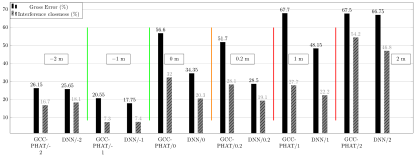

Part I: Speaker Localization
Data simulation for localization
Recording real data
- Data was recorded using an array of 4 microphone in French
- Models retrained using Ester dataset
-
Thanks to my awesome colleagues - Elodie Gauthier, Manuel Pariente, Nicholas Furnon, Nicholas Turpault - for helping out with the recording!
Result on real data - Single speaker
| Distance* | Sample count | GCC-PHAT | CSIPD no mask | CSIPD + Est. clean mask |
|---|---|---|---|---|
| 2.16m | 113 | 08.77 % | 08.05 % | 05.35 % |
| 3.59m | 90 | 23.30 % | 18.88 % | 14.43 % |
| 3.94m | 87 | 47.19 % | 49.43 % | 35.64 % |
| 4.16m | 114 | 23.65 % | 28.00 % | 12.26 % |
| 4.65m | 51 | 53.80 % | 22.04 % | 25.80 % |
Numbers are the gross error rates
Result on real data - Two speaker
- Green Block: Target closer to microphone compared to Interference
- Orange Block: Target and Interference are equidistant
- Red Block: Target farther to microphone compared to Interference
Part II: Speech separation
Conv-Tasnet settings
| Parameter | Value |
|---|---|
| Encoder filter count | 512 |
| Filter length | 16 |
| Bottleneck channel count | 128 |
| Number of channels in convolution block | 512 |
| Kernel size | 3 |
| Number of convolutional blocks per repeat | 8 |
Part III: Explaining Neural Network Predictions
Feature attribution methods
Deep SHapley Additive exPlanations (DeepSHAP)
Game theory ideas
- Shapley values was designed to distribute payout among the players in a game
- SHAP looks at every feature dimension as a player in the game $\rightarrow~~~ $ The game being the model predictions
- Lundberg, S. M. and Lee, S.-I. "A unified approach to interpreting model predictions" In Advances in Neural Information Processing Systems, 2017
Other methods were shown to be a special case of SHAP
DeepSHAP per frame